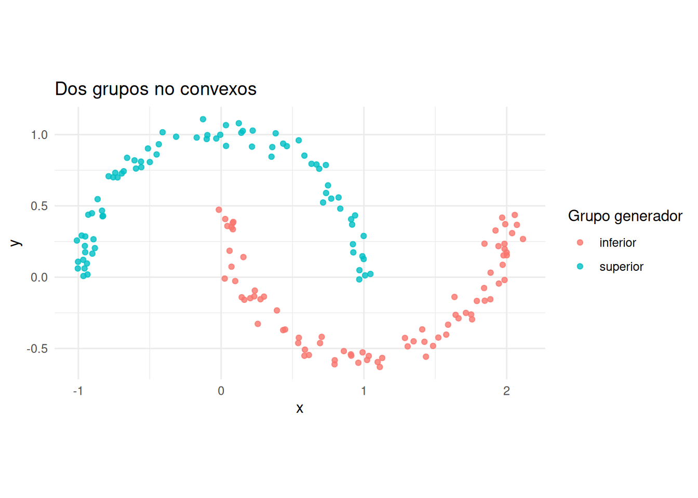
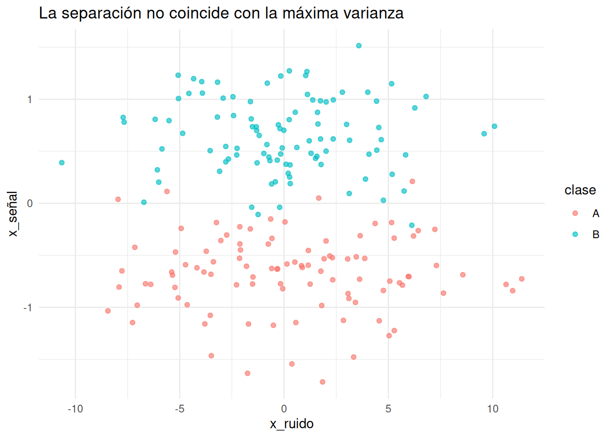

Estos ejercicios están pensados para discutir, experimentar y justificar. Una respuesta no está completa por incluir una cifra o un gráfico: debe explicar qué decisión metodológica se tomó, qué evidencia la respalda y qué limitación conserva la conclusión.
Salvo que se indique otra cosa, cada entrega debería contener:
una respuesta breve a la pregunta sustantiva;
una justificación de las variables, transformaciones y método elegidos;
una tabla o figura que aporte evidencia;
una limitación o una explicación alternativa.
En los ejercicios de construcción de datos no se busca encontrar el único ejemplo posible. El objetivo es producir un ejemplo reproducible que muestre con claridad el fenómeno pedido.
Nota
Una simulación es una demostración empírica, no una prueba general. Cuando se use una simulación, hay que distinguir qué se ha observado en esos datos de qué se afirma que ocurre en general.
15.2 Presentación de la asignatura
Ejercicio 0.1. La misma tabla, preguntas distintas. Imagina una tabla con información sobre canciones: duración, tempo, energía, tonalidad, género y popularidad. Formula cuatro preguntas diferentes que requieran, respectivamente, agrupamiento, reducción de dimensión, estudio de asociación y clasificación supervisada. Para cada pregunta, identifica la unidad de análisis, la variable respuesta si existe y el tipo de conclusión que sería legítimo comunicar.
Ejercicio 0.2. De la pregunta al método. Un equipo afirma: «Aplicaremos PCA porque tenemos muchas variables». Escribe una respuesta de revisión de unas 150 palabras. Explica qué información falta antes de recomendar una técnica y propón al menos dos preguntas para las que PCA no sería la elección natural aun cuando hubiera muchas columnas.
Ejercicio 0.3. Una conclusión demasiado fuerte. Reescribe de forma estadísticamente honesta la frase «el algoritmo ha descubierto tres tipos reales de consumidores». Da tres explicaciones alternativas para que aparezcan tres clusters y especifica qué evidencia adicional ayudaría a distinguirlas.
15.3 Introducción conceptual
Ejercicio 1.1. ¿Qué representa una fila? Una encuesta musical contiene una fila por reproducción, pero también un identificador de oyente y otro de canción. Explica cómo cambiarían la matriz de datos, las dependencias entre filas y la pregunta científica si la unidad de análisis fuera: a) una reproducción, b) una canción, o c) un oyente. Indica una técnica del curso que podría ser razonable en cada caso.
Ejercicio 1.2. Tipos de variables que dependen de la pregunta. Clasifica cyl, gear, carb y am de mtcars según su tipo estadístico. Después plantea dos análisis en los que una misma columna se trate de maneras diferentes. La respuesta debe justificar la codificación por el significado de la comparación, no por cómo R almacena la columna.
Ejercicio 1.3. Misma proyección, estructuras distintas. Construye dos datasets tridimensionales que tengan prácticamente la misma representación al proyectarlos sobre los ejes \(x_1\) y \(x_2\), pero estructuras claramente distintas al considerar \(x_3\). Muéstralos con gráficos y explica por qué una representación de baja dimensión siempre puede ocultar información.
Ejercicio 1.4. Diseñar una estructura multivariante. Genera un dataset con cinco variables en el que haya simultáneamente: dos variables redundantes, una variable con escala dominante, una variable irrelevante y una variable que separe dos grupos. No apliques todavía ningún método. Argumenta qué problemas anticipas para distancias, PCA y clustering.
15.4 Distancias y similitud
Ejercicio 2.1. La dirección importa. Usa disp y wt estandarizadas de mtcars. Calcula sus componentes principales y construye dos pares de puntos con la misma distancia euclídea: un par separado solamente en la dirección de PC1 y otro solamente en PC2. Representa los datos y los cuatro puntos antes de calcular distancias. Compara euclídea y Mahalanobis y explica el resultado a partir de los autovalores y de la correlación, no de las unidades originales.
Ejercicio 2.2. Vecinos que dependen de la pregunta. Elige un coche de mtcars y encuentra sus tres vecinos más próximos usando, sobre las mismas variables estandarizadas, distancia euclídea, Manhattan y Chebyshev. No te limites a listar vecinos: identifica qué diferencias entre coches está enfatizando cada geometría y decide cuál usarías en un sistema de recomendación donde una discrepancia extrema en una sola característica sea inaceptable.
Ejercicio 2.3. Una variable ordinal no equiespaciada. Diseña una variable de satisfacción con cinco categorías ordenadas para la que no sea razonable suponer saltos iguales. Propón posiciones numéricas para sus niveles, construye una distancia normalizada y compárala con: a) desacuerdo nominal y b) rangos equiespaciados. Explica qué conocimiento sustantivo introducen tus posiciones.
Ejercicio 2.4. Tonalidades musicales. Las doce clases cromáticas pueden codificarse como enteros de 0 a 11, pero forman un ciclo. Define una disimilitud entre tonalidades que haga próximas a B y C. Después discute por qué la proximidad cromática no representa necesariamente similitud armónica completa. Propón una extensión que distinga, al menos, modo mayor y menor.
Ejercicio 2.5. Gower no decide por nosotros. Selecciona cuatro variables numéricas y tres categóricas de mtcars_mixed_ex. Calcula distancias de Gower bajo dos sistemas de pesos que respondan a preguntas aplicadas diferentes. Busca un coche cuyo vecino más próximo cambie y explica exactamente qué contribuciones parciales producen el cambio.
Ejercicio 2.6. Construir un contraejemplo. Crea un dataset de entre cuatro y ocho individuos en el que duplicar una variable cambie el vecino más próximo de al menos un individuo con distancia euclídea. Muestra que estandarizar no elimina necesariamente este problema y explica la diferencia entre escala y redundancia.
15.5 Clustering jerárquico
El siguiente dataset contiene dos grupos compactos unidos por una cadena de puntos.
Ejercicio 3.1. El efecto cadena. Aplica single, complete, average y Ward a datos_puente. Antes de cortar los dendrogramas, predice qué método será más sensible al puente. Contrasta la predicción y explica el resultado usando la definición matemática del linkage.
Ejercicio 3.2. El dendrograma no es un mapa. Permuta el orden de las filas de datos_puente y vuelve a dibujar el dendrograma con el mismo método. Investiga qué puede cambiar visualmente aunque las fusiones y las alturas representen la misma jerarquía. Escribe tres reglas para evitar interpretar como distancia horizontal lo que solo es una disposición gráfica.
Ejercicio 3.3. Una fusión irreversible. Construye un ejemplo pequeño donde una de las primeras fusiones de un algoritmo aglomerativo resulte poco conveniente al observar la estructura global. Explica por qué el algoritmo no puede corregirla. Describe cómo plantearía el mismo problema un método divisivo y qué nueva decisión difícil aparecería.
Ejercicio 3.4. Ward y la geometría elegida. Compara Ward sobre variables originales y estandarizadas de mtcars. Identifica una fusión que cambie pronto en el árbol y explica qué variable o conjunto de variables la provoca. ¿Tendría sentido usar Ward directamente con una distancia de Gower? Responde atendiendo a su criterio de incremento de suma de cuadrados.
Ejercicio 3.5. ¿Dónde cortar? Elige dos cortes plausibles de un mismo dendrograma de mtcars. Defiende cada corte como si respondiera a una pregunta aplicada diferente. Usa perfiles y silhouette, pero explica por qué ninguno de esos elementos convierte automáticamente un corte en el «verdadero».
15.6 k-means y PAM
Este dataset tiene dos grupos curvos y permite estudiar una limitación geométrica de k-means.
Código
set.seed(42)n_luna <-80angulo <-runif(n_luna, 0, pi)datos_lunas <-bind_rows(tibble(x =cos(angulo) +rnorm(n_luna, 0, 0.06),y =sin(angulo) +rnorm(n_luna, 0, 0.06),grupo_generador ="superior" ),tibble(x =1-cos(angulo) +rnorm(n_luna, 0, 0.06),y =0.45-sin(angulo) +rnorm(n_luna, 0, 0.06),grupo_generador ="inferior" ))datos_lunas |>ggplot(aes(x, y, color = grupo_generador)) +geom_point(alpha =0.8) +coord_equal() +labs(title ="Dos grupos no convexos", color ="Grupo generador")

Ejercicio 4.1. Narrar una iteración. Selecciona seis puntos bidimensionales y dos centroides iniciales para que, después de una iteración de Lloyd, al menos un punto cambie de cluster en la iteración siguiente. Representa asignación y actualización en gráficos sucesivos. Explica por qué cada paso no aumenta la suma de cuadrados intracluster.
Ejercicio 4.2. Un mínimo local visible. Busca dos inicializaciones de k-means sobre un mismo dataset que terminen en particiones diferentes. Compara sus funciones objetivo y representa ambas soluciones. A partir del ejemplo, explica qué resuelve nstart y qué no resuelve.
Ejercicio 4.3. El outlier como centroide. Añade progresivamente un punto extremo a un dataset con dos grupos compactos. Compara cómo cambian los centroides de k-means y los medoides de PAM. No basta con afirmar que PAM es robusto: cuantifica el desplazamiento de los representantes y explica por qué el uso de un objeto observado limita la influencia.
Ejercicio 4.4. La geometría de las lunas. Aplica k-means y PAM euclídeo a datos_lunas. Explica por qué ambos pueden fallar aunque uno use centroides y otro medoides. Propón una distancia o representación alternativa que haga accesible la estructura curva, sin usar las etiquetas grupo_generador para construirla.
Ejercicio 4.5. Tres criterios, tres mensajes. Sobre mtcars, compara codo, silhouette y gap statistic para varios valores de \(k\). Si coinciden, modifica razonablemente las variables o añade observaciones para producir desacuerdo. La entrega debe explicar qué aspecto de la partición mide cada criterio y por qué el desacuerdo es información útil.
15.7 Interpretación de clusters
Ejercicio 5.1. Nombrar sin caricaturizar. Obtén una partición de mtcars y construye perfiles con medias estandarizadas. Propón un nombre descriptivo para cada cluster y después escribe una versión deliberadamente exagerada de esos nombres. Explica qué afirmaciones de la segunda versión no están respaldadas por las variables observadas.
Ejercicio 5.2. La media oculta individuos. Construye dos clusters con medias casi idénticas en una variable pero distribuciones muy diferentes. Demuestra con boxplots o violines por qué una tabla de medias sería insuficiente. Añade una segunda variable en la que ocurra lo contrario: medias distintas pero gran solapamiento.
Ejercicio 5.3. Variable activa o suplementaria. Usa am de mtcars primero como parte activa de una representación mixta y después como variable suplementaria para interpretar clusters numéricos. Compara las preguntas que responde cada análisis. Explica por qué una asociación fuerte con am tiene distinto significado en ambos casos.
Ejercicio 5.4. Estabilidad localizada. Repite un clustering de mtcars sobre muestras bootstrap y estima con qué frecuencia dos coches aparecen juntos. Busca un coche con pertenencia inestable. ¿La solución adecuada es eliminarlo, asignarlo por mayoría o comunicar incertidumbre? Defiende una opción según un contexto aplicado inventado.
Ejercicio 5.5. Auditoría de un informe. Escribe un mini-informe de cinco frases sobre una partición y pásalo por esta auditoría: ¿declara variables activas?, ¿explica escalado y distancia?, ¿justifica \(k\)?, ¿describe heterogeneidad interna?, ¿evita presentar clusters como clases naturales? Reescribe el informe después de la auditoría.
15.8 Análisis de componentes principales
Ejercicio 6.1. Dígitos y características. Una imagen MNIST tiene 784 intensidades de píxel. Propón entre cinco y ocho características construidas que podrían ser más informativas para distinguir formas, como número de bucles, simetría o centro de masa. Indica cuáles son lineales y cuáles no. Explica por qué PCA puede descubrir una superficie lineal de baja dimensión, pero no necesariamente esas características semánticas.
Ejercicio 6.2. Mucha varianza, poca información. Construye un dataset con dos clases conocidas en el que la dirección de máxima varianza no ayude a separarlas y una dirección de poca varianza sí lo haga. Ajusta PCA sin usar la clase y representa PC1 y PC2 coloreando a posteriori. Explica por qué «varianza explicada» no significa «información predictiva».
Ejercicio 6.3. Preservación de varianza total. Usa una matriz de covarianzas \(3\times3\) no diagonal. Calcula su traza, los autovalores y la varianza de los datos expresados en las tres componentes. Comprueba la igualdad numérica y explícala mediante el cambio de base ortonormal. Después conserva solo dos componentes y distingue entre varianza total preservada por la rotación y varianza retenida por la reducción.
Ejercicio 6.4. Escalar es elegir una pregunta. Compara PCA de covarianzas y PCA de correlaciones en mtcars. Identifica qué variables dominan cada primera componente. Formula una pregunta aplicada para la que cada análisis sea defendible; evita presentar el escalado como un trámite automático.
Ejercicio 6.5. Signo y orientación. Cambia el signo de todos los loadings y scores de una componente principal. Comprueba qué cantidades permanecen iguales y qué elementos del gráfico se reflejan. Explica por qué dos programas pueden mostrar ejes con sentidos opuestos sin discrepar estadísticamente.
Ejercicio 6.6. Calidad frente a contribución. Encuentra en un PCA de mtcars: a) un coche bien representado en el plano pero con contribución modesta y b) un coche con contribución alta a un eje. Explica por qué cos² y contribución responden a preguntas distintas.
15.9 Análisis factorial exploratorio
Ejercicio 7.1. Del modelo a la covarianza. Parte de \(X = \Lambda F + \varepsilon\) y deriva cada paso hasta \(\Sigma = \Lambda\Phi\Lambda^\mathsf{T} + \Psi\). Debes indicar qué términos cruzados desaparecen y bajo qué supuestos. Explica por qué, si los errores específicos son independientes y \(\varepsilon_i\sim N(0,\psi_i)\), entonces \(\Psi\) es diagonal. Discute qué cambiaría si dos errores específicos estuvieran correlacionados.
Ejercicio 7.2. La misma covarianza, cargas distintas. Parte de una matriz de cargas con dos factores ortogonales y aplícale una rotación ortogonal. Comprueba que \(\Lambda\Lambda^\mathsf{T}\) no cambia. Explica qué implica esto para la identificabilidad de los factores y por qué una rotación puede mejorar la interpretación sin mejorar el ajuste.
Ejercicio 7.3. Diseñar una estructura simple. Construye una matriz de cargas para ocho variables y dos factores que tenga estructura simple. Después introduce dos cargas cruzadas y una unicidad muy alta. Simula datos a partir del modelo y estudia si el análisis recupera las dificultades que diseñaste.
Ejercicio 7.4. PCA o factores. Imagina seis preguntas de un cuestionario influidas por dos rasgos latentes y, además, por errores de medición. Compara qué objeto intenta reproducir PCA y qué objeto intenta reproducir el análisis factorial. Diseña una situación en la que dos componentes describan bien los datos pero no deban interpretarse como dos causas latentes.
Ejercicio 7.5. ¿Cuántos factores? Busca o simula un caso donde scree plot, análisis paralelo e interpretabilidad sugieran números diferentes de factores. Redacta una decisión razonada que no consista en votar entre criterios. Indica qué análisis de sensibilidad presentarías.
Ejercicio 7.6. Normalidad y significado. Explica qué papel desempeña la normalidad en la estimación e inferencia factorial y qué partes descriptivas del modelo pueden seguir siendo útiles sin normalidad exacta. Propón dos diagnósticos y una alternativa para datos claramente ordinales.
15.10 Análisis de correspondencias simple
Usaremos esta tabla para varios ejercicios. Las filas representan franjas de escucha y las columnas, tipos de contenido.
Ejercicio 9.1. Perfiles antes que frecuencias. Duplica todos los recuentos de una fila de tabla_escucha y compara las frecuencias, los perfiles fila y su posición en un análisis de correspondencias. Explica qué cambia y qué no cambia. ¿Por qué la masa de la fila sigue siendo relevante aunque su perfil permanezca igual?
Ejercicio 9.2. La distancia chi-cuadrado pondera. Añade una categoría columna muy frecuente y otra muy rara, ambas con pequeñas desviaciones relativas entre filas. Compara su influencia en la distancia chi-cuadrado. Explica por qué dividir por el perfil marginal hace visibles categorías raras y cuándo esto puede resultar problemático.
Ejercicio 9.3. De independencia a estructura. Construye primero una tabla exactamente independiente a partir de unos marginales elegidos. Modifica después una única celda conservando el total mediante cambios compensatorios. Sigue cómo cambian residuos, estadístico chi-cuadrado, inercia y coordenadas. Identifica qué magnitudes expresan la misma desviación en escalas distintas.
Ejercicio 9.4. Leer un mapa sin inventar proximidades. Realiza CA sobre tabla_escucha y redacta cinco interpretaciones del mapa: dos correctas, dos incorrectas y una que necesite información adicional. Intercambia la lista con otra persona para que identifique cada tipo y lo justifique usando perfiles, contribuciones y cos².
Ejercicio 9.5. Una categoría extrema pero poco fiable. Añade una fila con masa muy pequeña y perfil extremo. Estudia su contribución y calidad de representación. Decide si debe ser activa, agruparse con otra o tratarse como suplementaria, y justifica la decisión desde el contexto, no solo desde el gráfico.
15.11 Análisis de correspondencias múltiples
Ejercicio 10.1. Distancias en la tabla indicadora. Selecciona dos pasajeros de titanic_ex que difieran en una sola variable y otros dos que difieran en varias. Construye sus filas de la tabla indicadora y relaciona la distancia entre ellas con el número y la frecuencia de las modalidades en desacuerdo.
Ejercicio 10.2. Inercia generada por la codificación. Añade a titanic_ex una variable categórica aleatoria con dos niveles y después otra con diez niveles. Repite MCA y estudia cómo cambia la inercia bruta. Explica por qué añadir modalidades aumenta inercia aunque no aporte estructura sustantiva y qué pretende corregir Benzécri.
Ejercicio 10.3. Modalidad rara. Crea una modalidad que aparezca en muy pocos individuos y observa su distancia al origen, contribución y cos². Explica por qué estar lejos no basta para convertirla en el hallazgo principal. Propón una regla de revisión que combine frecuencia, contribución y estabilidad.
Ejercicio 10.4. Activa o suplementaria. Compara dos MCA de titanic_ex: uno con Survived activa y otro con Survived suplementaria. Explica con precisión por qué las asociaciones observadas no tienen el mismo estatus en ambos mapas y cuál usarías para explorar perfiles previos al desenlace.
Ejercicio 10.5. Clustering sobre coordenadas. Agrupa pasajeros usando un número pequeño y después uno grande de dimensiones MCA. Compara estabilidad e interpretación de los clusters. Explica qué información se pierde al usar pocas dimensiones y qué ruido o inercia trivial puede reintroducirse al usar demasiadas.
15.12 FAMD para datos mixtos
Ejercicio 8.1. Equilibrar bloques. Crea dos versiones de mtcars_mixed_ex: una con seis variables numéricas y una categórica, y otra donde esa categórica se duplique varias veces. Compara una concatenación ingenua de variables estandarizadas e indicadoras con FAMD. Explica qué normalización evita que un bloque domine únicamente por su número de columnas o modalidades.
Ejercicio 8.2. Una dimensión mixta. Interpreta una dimensión FAMD de mtcars_mixed_ex que relacione simultáneamente variables numéricas y modalidades categóricas. La interpretación debe incluir contribuciones, coordenadas y cos², además de al menos dos coches bien representados. Propón un nombre para el eje y señala qué parte de ese nombre es inferencia sustantiva.
Ejercicio 8.3. FAMD frente a Gower. Compara vecinos obtenidos con distancia de Gower y con distancia euclídea en varias dimensiones FAMD. Busca un individuo para el que difieran. Explica qué decisiones de ponderación y qué pérdida por truncamiento pueden producir la discrepancia.
Ejercicio 8.4. Categoría informativa o etiqueta encubierta. Añade a un dataset mixto una categoría casi idéntica a una variable que luego quieras usar para interpretar o predecir. Estudia cómo domina la representación. Explica por qué declarar una variable suplementaria puede evitar circularidad, pero no arregla otras variables activas que filtren la misma información.
Ejercicio 8.5. Diseñar datos mixtos. Construye un dataset reproducible de al menos 30 individuos con dos numéricas, una ordinal, una nominal y una binaria asimétrica. Introduce deliberadamente una relación entre bloques. Antes de ejecutar FAMD, predice qué variables definirán las dos primeras dimensiones; después revisa la predicción con contribuciones.
15.13 Análisis discriminante
El siguiente dataset contiene dos clases separadas sobre todo en una dirección de varianza pequeña.
Código
set.seed(73)n_clase <-100datos_discriminantes <-tibble(clase =factor(rep(c("A", "B"), each = n_clase)),x_ruido =rnorm(2* n_clase, sd =4), x_señal =c(rnorm(n_clase, -0.65, 0.35),rnorm(n_clase, 0.65, 0.35) ))datos_discriminantes |>ggplot(aes(x_ruido, x_señal, color = clase)) +geom_point(alpha =0.65) +labs(title ="La separación no coincide con la máxima varianza")

Ejercicio 11.1. PCA no es LDA. Aplica PCA a las variables de datos_discriminantes sin usar clase y compara su primera dirección con la dirección discriminante de LDA. Explica las funciones objetivo distintas y por qué descartar componentes de poca varianza antes de clasificar puede eliminar la señal.
Ejercicio 11.2. LDA o QDA por la geometría. Simula dos escenarios: uno con covarianzas de clase iguales y otro con covarianzas claramente diferentes. Compara fronteras LDA y QDA con muestras pequeñas y grandes. Describe el compromiso entre sesgo y varianza sin decidir solo por la accuracy de una partición concreta.
Ejercicio 11.3. Los errores no cuestan lo mismo. Diseña un problema binario donde un falso negativo cueste diez veces más que un falso positivo. A partir de probabilidades posteriores, compara la regla de máximo posterior con una regla basada en coste esperado. Construye dos matrices de confusión con la misma accuracy pero consecuencias muy distintas.
Ejercicio 11.4. Fuga de información. Inventa tres ejemplos de data leakage en un análisis discriminante: uno producido por una variable, otro por el preprocesamiento y otro por la forma de dividir los datos. Para cada uno, explica por qué la estimación del error es optimista y cómo rediseñarías el flujo de validación.
Ejercicio 11.5. Una clase minoritaria. Crea un test con un 95% de una clase y muestra que clasificar siempre en la mayoritaria consigue alta accuracy. Propón métricas y una política de validación más informativas. La respuesta debe conectar cada métrica con una consecuencia aplicada.
15.14 Casos integradores
Ejercicio 12.1. La técnica depende de la pregunta. Formula sobre mtcars_mixed_ex tres preguntas que usen exactamente las mismas filas y columnas pero conduzcan razonablemente a PCA, FAMD y análisis discriminante. Explica qué papel es activo, suplementario o respuesta en cada análisis.
Ejercicio 12.2. Dos representaciones que discrepan. Analiza un mismo dataset mediante clustering sobre variables originales estandarizadas y clustering sobre unas pocas componentes principales. Busca una observación cuya asignación cambie. Investiga si el cambio se debe a reducción de ruido, pérdida de una dirección relevante o geometría del algoritmo.
Ejercicio 12.3. Informe con decisión. Elige una pregunta aplicada y redacta un informe de dos páginas con esta secuencia: pregunta, unidad de análisis, variables, preprocesamiento, método, selección de complejidad, resultado, validación y limitaciones. Solo puede incluir dos figuras y una tabla; justifica por qué son las evidencias más informativas.
Ejercicio 12.4. Revisión por pares adversarial. Intercambia el informe anterior con otra persona. La revisión debe intentar refutar la conclusión mediante: una codificación alternativa, una elección distinta de distancia o escalado, una perturbación de la muestra y una interpretación alternativa. El informe final debe indicar qué conclusiones sobrevivieron.
Ejercicio 12.5. Diseñar un caso donde el método falle. Elige una técnica del curso y construye datos que violen de forma visible uno de sus supuestos o intuiciones geométricas. Muestra el resultado engañoso y propón un diagnóstico que permita detectarlo sin conocer el mecanismo generador.
Ejercicio 12.6. Mapa de decisiones. Construye un diagrama de decisión para elegir entre clustering, PCA, análisis factorial, CA, MCA, FAMD y análisis discriminante. Debe incluir tipo de variables, existencia de respuesta, objetivo del análisis y al menos una advertencia por técnica. Prueba el diagrama con tres casos ambiguos y documenta dónde necesita juicio experto.
15.15 Guía práctica de tidyverse y dplyr
Ejercicio T.1. Una tubería legible. Toma un análisis de mtcars escrito como una sucesión de objetos intermedios o llamadas anidadas. Reescríbelo como pipeline y después divide la tubería en dos objetos con nombres sustantivos. Compara las tres versiones atendiendo a facilidad de depuración, no a número de líneas.
Ejercicio T.2. El estado oculto de group_by(). Construye un ejemplo donde olvidar un agrupamiento activo cambie el resultado de un mutate() posterior. Diagnostica el problema con group_vars() y corrígelo con .groups o ungroup(). Explica por qué el código puede ejecutarse sin error y aun así responder otra pregunta.
Ejercicio T.3. Un join que multiplica filas. Crea dos tablas con claves duplicadas y realiza un left_join() que aumente inesperadamente el número de filas. Explica la relación muchos-a-muchos, diseña comprobaciones previas de unicidad y decide si el problema se corrige agregando, deduplicando o ampliando la clave.
Ejercicio T.4. Ancho, largo y unidad de observación. Construye una tabla de medidas repetidas en formato ancho y transfórmala a largo con pivot_longer(). Explica qué representa una fila antes y después. Vuelve a formato ancho y verifica qué identificadores hacen reversible la operación.
Ejercicio T.5. Un pipeline estadísticamente incorrecto. Escribe código tidyverse sintácticamente impecable que produzca una comparación sesgada, por ejemplo filtrando después de observar la respuesta o resumiendo con denominadores inadecuados. Pide a otra persona que encuentre el problema conceptual. La moraleja debe distinguir código limpio de análisis válido.
15.16 Proyecto de síntesis
Construye o elige un dataset pequeño que permita formular al menos tres preguntas multivariantes distintas. Una de ellas debe ser no supervisada, otra debe usar variables categóricas o mixtas y otra debe ser supervisada. El proyecto debe:
justificar la unidad de análisis y el origen de cada variable;
anticipar la geometría o estructura que se espera encontrar;
comparar al menos dos decisiones metodológicas razonables;
incluir un análisis de estabilidad, sensibilidad o validación;
separar resultados observados de interpretación sustantiva;
terminar con una conclusión que podría cambiar si se obtuvieran nuevos datos.
El dataset puede ser simulado. En ese caso, el mecanismo generador debe escribirse en R y la evaluación debe distinguir entre recuperar una estructura que se introdujo deliberadamente y descubrir una estructura desconocida.
Ejecutar el código
# Ejercicios conceptuales```{r}#| label: setup#| message: false#| warning: falselibrary(tidyverse)library(knitr)theme_set(theme_minimal())mtcars_ex <- mtcars |>as_tibble(rownames ="modelo")mtcars_mixed_ex <- mtcars_ex |>mutate(cyl =factor(cyl),vs =factor(vs, labels =c("V", "recto")),am =factor(am, labels =c("automatico", "manual")),gear =factor(gear),carb =factor(carb) )titanic_ex <- Titanic |>as.data.frame() |>uncount(Freq)```## Cómo trabajar con este capítuloEstos ejercicios están pensados para discutir, experimentar y justificar. Una respuesta no está completa por incluir una cifra o un gráfico: debe explicar qué decisión metodológica se tomó, qué evidencia la respalda y qué limitación conserva la conclusión.Salvo que se indique otra cosa, cada entrega debería contener:1. una respuesta breve a la pregunta sustantiva;2. una justificación de las variables, transformaciones y método elegidos;3. una tabla o figura que aporte evidencia;4. una limitación o una explicación alternativa.En los ejercicios de construcción de datos no se busca encontrar el único ejemplo posible. El objetivo es producir un ejemplo reproducible que muestre con claridad el fenómeno pedido.::: {.callout-note}Una simulación es una demostración empírica, no una prueba general. Cuando se use una simulación, hay que distinguir qué se ha observado en esos datos de qué se afirma que ocurre en general.:::## Presentación de la asignatura**Ejercicio 0.1. La misma tabla, preguntas distintas.** Imagina una tabla con información sobre canciones: duración, tempo, energía, tonalidad, género y popularidad. Formula cuatro preguntas diferentes que requieran, respectivamente, agrupamiento, reducción de dimensión, estudio de asociación y clasificación supervisada. Para cada pregunta, identifica la unidad de análisis, la variable respuesta si existe y el tipo de conclusión que sería legítimo comunicar.**Ejercicio 0.2. De la pregunta al método.** Un equipo afirma: «Aplicaremos PCA porque tenemos muchas variables». Escribe una respuesta de revisión de unas 150 palabras. Explica qué información falta antes de recomendar una técnica y propón al menos dos preguntas para las que PCA no sería la elección natural aun cuando hubiera muchas columnas.**Ejercicio 0.3. Una conclusión demasiado fuerte.** Reescribe de forma estadísticamente honesta la frase «el algoritmo ha descubierto tres tipos reales de consumidores». Da tres explicaciones alternativas para que aparezcan tres clusters y especifica qué evidencia adicional ayudaría a distinguirlas.## Introducción conceptual**Ejercicio 1.1. ¿Qué representa una fila?** Una encuesta musical contiene una fila por reproducción, pero también un identificador de oyente y otro de canción. Explica cómo cambiarían la matriz de datos, las dependencias entre filas y la pregunta científica si la unidad de análisis fuera: a) una reproducción, b) una canción, o c) un oyente. Indica una técnica del curso que podría ser razonable en cada caso.**Ejercicio 1.2. Tipos de variables que dependen de la pregunta.** Clasifica `cyl`, `gear`, `carb` y `am` de `mtcars` según su tipo estadístico. Después plantea dos análisis en los que una misma columna se trate de maneras diferentes. La respuesta debe justificar la codificación por el significado de la comparación, no por cómo R almacena la columna.**Ejercicio 1.3. Misma proyección, estructuras distintas.** Construye dos datasets tridimensionales que tengan prácticamente la misma representación al proyectarlos sobre los ejes $x_1$ y $x_2$, pero estructuras claramente distintas al considerar $x_3$. Muéstralos con gráficos y explica por qué una representación de baja dimensión siempre puede ocultar información.**Ejercicio 1.4. Diseñar una estructura multivariante.** Genera un dataset con cinco variables en el que haya simultáneamente: dos variables redundantes, una variable con escala dominante, una variable irrelevante y una variable que separe dos grupos. No apliques todavía ningún método. Argumenta qué problemas anticipas para distancias, PCA y clustering.## Distancias y similitud**Ejercicio 2.1. La dirección importa.** Usa `disp` y `wt` estandarizadas de `mtcars`. Calcula sus componentes principales y construye dos pares de puntos con la misma distancia euclídea: un par separado solamente en la dirección de PC1 y otro solamente en PC2. Representa los datos y los cuatro puntos antes de calcular distancias. Compara euclídea y Mahalanobis y explica el resultado a partir de los autovalores y de la correlación, no de las unidades originales.**Ejercicio 2.2. Vecinos que dependen de la pregunta.** Elige un coche de `mtcars` y encuentra sus tres vecinos más próximos usando, sobre las mismas variables estandarizadas, distancia euclídea, Manhattan y Chebyshev. No te limites a listar vecinos: identifica qué diferencias entre coches está enfatizando cada geometría y decide cuál usarías en un sistema de recomendación donde una discrepancia extrema en una sola característica sea inaceptable.**Ejercicio 2.3. Una variable ordinal no equiespaciada.** Diseña una variable de satisfacción con cinco categorías ordenadas para la que no sea razonable suponer saltos iguales. Propón posiciones numéricas para sus niveles, construye una distancia normalizada y compárala con: a) desacuerdo nominal y b) rangos equiespaciados. Explica qué conocimiento sustantivo introducen tus posiciones.**Ejercicio 2.4. Tonalidades musicales.** Las doce clases cromáticas pueden codificarse como enteros de 0 a 11, pero forman un ciclo. Define una disimilitud entre tonalidades que haga próximas a `B` y `C`. Después discute por qué la proximidad cromática no representa necesariamente similitud armónica completa. Propón una extensión que distinga, al menos, modo mayor y menor.**Ejercicio 2.5. Gower no decide por nosotros.** Selecciona cuatro variables numéricas y tres categóricas de `mtcars_mixed_ex`. Calcula distancias de Gower bajo dos sistemas de pesos que respondan a preguntas aplicadas diferentes. Busca un coche cuyo vecino más próximo cambie y explica exactamente qué contribuciones parciales producen el cambio.**Ejercicio 2.6. Construir un contraejemplo.** Crea un dataset de entre cuatro y ocho individuos en el que duplicar una variable cambie el vecino más próximo de al menos un individuo con distancia euclídea. Muestra que estandarizar no elimina necesariamente este problema y explica la diferencia entre escala y redundancia.## Clustering jerárquicoEl siguiente dataset contiene dos grupos compactos unidos por una cadena de puntos.```{r}#| label: datos-puenteset.seed(31)datos_puente <-bind_rows(tibble(id =paste0("I", 1:12),x =rnorm(12, -3, 0.35),y =rnorm(12, 0, 0.35),tipo ="nube izquierda" ),tibble(id =paste0("D", 1:12),x =rnorm(12, 3, 0.35),y =rnorm(12, 0, 0.35),tipo ="nube derecha" ),tibble(id =paste0("P", 1:7),x =seq(-2.1, 2.1, length.out =7),y =rnorm(7, 0, 0.08),tipo ="puente" ))datos_puente |>ggplot(aes(x, y, color = tipo, label = id)) +geom_point(size =2.5) +geom_text(nudge_y =0.18, size =3, show.legend =FALSE) +coord_equal() +labs(title ="Dos nubes conectadas por un puente", color =NULL)```**Ejercicio 3.1. El efecto cadena.** Aplica single, complete, average y Ward a `datos_puente`. Antes de cortar los dendrogramas, predice qué método será más sensible al puente. Contrasta la predicción y explica el resultado usando la definición matemática del linkage.**Ejercicio 3.2. El dendrograma no es un mapa.** Permuta el orden de las filas de `datos_puente` y vuelve a dibujar el dendrograma con el mismo método. Investiga qué puede cambiar visualmente aunque las fusiones y las alturas representen la misma jerarquía. Escribe tres reglas para evitar interpretar como distancia horizontal lo que solo es una disposición gráfica.**Ejercicio 3.3. Una fusión irreversible.** Construye un ejemplo pequeño donde una de las primeras fusiones de un algoritmo aglomerativo resulte poco conveniente al observar la estructura global. Explica por qué el algoritmo no puede corregirla. Describe cómo plantearía el mismo problema un método divisivo y qué nueva decisión difícil aparecería.**Ejercicio 3.4. Ward y la geometría elegida.** Compara Ward sobre variables originales y estandarizadas de `mtcars`. Identifica una fusión que cambie pronto en el árbol y explica qué variable o conjunto de variables la provoca. ¿Tendría sentido usar Ward directamente con una distancia de Gower? Responde atendiendo a su criterio de incremento de suma de cuadrados.**Ejercicio 3.5. ¿Dónde cortar?** Elige dos cortes plausibles de un mismo dendrograma de `mtcars`. Defiende cada corte como si respondiera a una pregunta aplicada diferente. Usa perfiles y silhouette, pero explica por qué ninguno de esos elementos convierte automáticamente un corte en el «verdadero».## k-means y PAMEste dataset tiene dos grupos curvos y permite estudiar una limitación geométrica de k-means.```{r}#| label: datos-lunasset.seed(42)n_luna <-80angulo <-runif(n_luna, 0, pi)datos_lunas <-bind_rows(tibble(x =cos(angulo) +rnorm(n_luna, 0, 0.06),y =sin(angulo) +rnorm(n_luna, 0, 0.06),grupo_generador ="superior" ),tibble(x =1-cos(angulo) +rnorm(n_luna, 0, 0.06),y =0.45-sin(angulo) +rnorm(n_luna, 0, 0.06),grupo_generador ="inferior" ))datos_lunas |>ggplot(aes(x, y, color = grupo_generador)) +geom_point(alpha =0.8) +coord_equal() +labs(title ="Dos grupos no convexos", color ="Grupo generador")```**Ejercicio 4.1. Narrar una iteración.** Selecciona seis puntos bidimensionales y dos centroides iniciales para que, después de una iteración de Lloyd, al menos un punto cambie de cluster en la iteración siguiente. Representa asignación y actualización en gráficos sucesivos. Explica por qué cada paso no aumenta la suma de cuadrados intracluster.**Ejercicio 4.2. Un mínimo local visible.** Busca dos inicializaciones de k-means sobre un mismo dataset que terminen en particiones diferentes. Compara sus funciones objetivo y representa ambas soluciones. A partir del ejemplo, explica qué resuelve `nstart` y qué no resuelve.**Ejercicio 4.3. El outlier como centroide.** Añade progresivamente un punto extremo a un dataset con dos grupos compactos. Compara cómo cambian los centroides de k-means y los medoides de PAM. No basta con afirmar que PAM es robusto: cuantifica el desplazamiento de los representantes y explica por qué el uso de un objeto observado limita la influencia.**Ejercicio 4.4. La geometría de las lunas.** Aplica k-means y PAM euclídeo a `datos_lunas`. Explica por qué ambos pueden fallar aunque uno use centroides y otro medoides. Propón una distancia o representación alternativa que haga accesible la estructura curva, sin usar las etiquetas `grupo_generador` para construirla.**Ejercicio 4.5. Tres criterios, tres mensajes.** Sobre `mtcars`, compara codo, silhouette y gap statistic para varios valores de $k$. Si coinciden, modifica razonablemente las variables o añade observaciones para producir desacuerdo. La entrega debe explicar qué aspecto de la partición mide cada criterio y por qué el desacuerdo es información útil.## Interpretación de clusters**Ejercicio 5.1. Nombrar sin caricaturizar.** Obtén una partición de `mtcars` y construye perfiles con medias estandarizadas. Propón un nombre descriptivo para cada cluster y después escribe una versión deliberadamente exagerada de esos nombres. Explica qué afirmaciones de la segunda versión no están respaldadas por las variables observadas.**Ejercicio 5.2. La media oculta individuos.** Construye dos clusters con medias casi idénticas en una variable pero distribuciones muy diferentes. Demuestra con boxplots o violines por qué una tabla de medias sería insuficiente. Añade una segunda variable en la que ocurra lo contrario: medias distintas pero gran solapamiento.**Ejercicio 5.3. Variable activa o suplementaria.** Usa `am` de `mtcars` primero como parte activa de una representación mixta y después como variable suplementaria para interpretar clusters numéricos. Compara las preguntas que responde cada análisis. Explica por qué una asociación fuerte con `am` tiene distinto significado en ambos casos.**Ejercicio 5.4. Estabilidad localizada.** Repite un clustering de `mtcars` sobre muestras bootstrap y estima con qué frecuencia dos coches aparecen juntos. Busca un coche con pertenencia inestable. ¿La solución adecuada es eliminarlo, asignarlo por mayoría o comunicar incertidumbre? Defiende una opción según un contexto aplicado inventado.**Ejercicio 5.5. Auditoría de un informe.** Escribe un mini-informe de cinco frases sobre una partición y pásalo por esta auditoría: ¿declara variables activas?, ¿explica escalado y distancia?, ¿justifica $k$?, ¿describe heterogeneidad interna?, ¿evita presentar clusters como clases naturales? Reescribe el informe después de la auditoría.## Análisis de componentes principales**Ejercicio 6.1. Dígitos y características.** Una imagen MNIST tiene 784 intensidades de píxel. Propón entre cinco y ocho características construidas que podrían ser más informativas para distinguir formas, como número de bucles, simetría o centro de masa. Indica cuáles son lineales y cuáles no. Explica por qué PCA puede descubrir una superficie lineal de baja dimensión, pero no necesariamente esas características semánticas.**Ejercicio 6.2. Mucha varianza, poca información.** Construye un dataset con dos clases conocidas en el que la dirección de máxima varianza no ayude a separarlas y una dirección de poca varianza sí lo haga. Ajusta PCA sin usar la clase y representa PC1 y PC2 coloreando a posteriori. Explica por qué «varianza explicada» no significa «información predictiva».**Ejercicio 6.3. Preservación de varianza total.** Usa una matriz de covarianzas $3\times3$ no diagonal. Calcula su traza, los autovalores y la varianza de los datos expresados en las tres componentes. Comprueba la igualdad numérica y explícala mediante el cambio de base ortonormal. Después conserva solo dos componentes y distingue entre varianza total preservada por la rotación y varianza retenida por la reducción.**Ejercicio 6.4. Escalar es elegir una pregunta.** Compara PCA de covarianzas y PCA de correlaciones en `mtcars`. Identifica qué variables dominan cada primera componente. Formula una pregunta aplicada para la que cada análisis sea defendible; evita presentar el escalado como un trámite automático.**Ejercicio 6.5. Signo y orientación.** Cambia el signo de todos los loadings y scores de una componente principal. Comprueba qué cantidades permanecen iguales y qué elementos del gráfico se reflejan. Explica por qué dos programas pueden mostrar ejes con sentidos opuestos sin discrepar estadísticamente.**Ejercicio 6.6. Calidad frente a contribución.** Encuentra en un PCA de `mtcars`: a) un coche bien representado en el plano pero con contribución modesta y b) un coche con contribución alta a un eje. Explica por qué cos² y contribución responden a preguntas distintas.## Análisis factorial exploratorio**Ejercicio 7.1. Del modelo a la covarianza.** Parte de $X = \Lambda F + \varepsilon$ y deriva cada paso hasta $\Sigma = \Lambda\Phi\Lambda^\mathsf{T} + \Psi$. Debes indicar qué términos cruzados desaparecen y bajo qué supuestos. Explica por qué, si los errores específicos son independientes y $\varepsilon_i\sim N(0,\psi_i)$, entonces $\Psi$ es diagonal. Discute qué cambiaría si dos errores específicos estuvieran correlacionados.**Ejercicio 7.2. La misma covarianza, cargas distintas.** Parte de una matriz de cargas con dos factores ortogonales y aplícale una rotación ortogonal. Comprueba que $\Lambda\Lambda^\mathsf{T}$ no cambia. Explica qué implica esto para la identificabilidad de los factores y por qué una rotación puede mejorar la interpretación sin mejorar el ajuste.**Ejercicio 7.3. Diseñar una estructura simple.** Construye una matriz de cargas para ocho variables y dos factores que tenga estructura simple. Después introduce dos cargas cruzadas y una unicidad muy alta. Simula datos a partir del modelo y estudia si el análisis recupera las dificultades que diseñaste.**Ejercicio 7.4. PCA o factores.** Imagina seis preguntas de un cuestionario influidas por dos rasgos latentes y, además, por errores de medición. Compara qué objeto intenta reproducir PCA y qué objeto intenta reproducir el análisis factorial. Diseña una situación en la que dos componentes describan bien los datos pero no deban interpretarse como dos causas latentes.**Ejercicio 7.5. ¿Cuántos factores?** Busca o simula un caso donde scree plot, análisis paralelo e interpretabilidad sugieran números diferentes de factores. Redacta una decisión razonada que no consista en votar entre criterios. Indica qué análisis de sensibilidad presentarías.**Ejercicio 7.6. Normalidad y significado.** Explica qué papel desempeña la normalidad en la estimación e inferencia factorial y qué partes descriptivas del modelo pueden seguir siendo útiles sin normalidad exacta. Propón dos diagnósticos y una alternativa para datos claramente ordinales.## Análisis de correspondencias simpleUsaremos esta tabla para varios ejercicios. Las filas representan franjas de escucha y las columnas, tipos de contenido.```{r}#| label: tabla-escuchatabla_escucha <-matrix(c(48, 18, 6, 28,24, 36, 18, 22,8, 22, 46, 24 ),nrow =3,byrow =TRUE,dimnames =list(franja =c("mañana", "tarde", "noche"),contenido =c("noticias", "listas", "albumes", "podcasts") ))kable(tabla_escucha)```**Ejercicio 9.1. Perfiles antes que frecuencias.** Duplica todos los recuentos de una fila de `tabla_escucha` y compara las frecuencias, los perfiles fila y su posición en un análisis de correspondencias. Explica qué cambia y qué no cambia. ¿Por qué la masa de la fila sigue siendo relevante aunque su perfil permanezca igual?**Ejercicio 9.2. La distancia chi-cuadrado pondera.** Añade una categoría columna muy frecuente y otra muy rara, ambas con pequeñas desviaciones relativas entre filas. Compara su influencia en la distancia chi-cuadrado. Explica por qué dividir por el perfil marginal hace visibles categorías raras y cuándo esto puede resultar problemático.**Ejercicio 9.3. De independencia a estructura.** Construye primero una tabla exactamente independiente a partir de unos marginales elegidos. Modifica después una única celda conservando el total mediante cambios compensatorios. Sigue cómo cambian residuos, estadístico chi-cuadrado, inercia y coordenadas. Identifica qué magnitudes expresan la misma desviación en escalas distintas.**Ejercicio 9.4. Leer un mapa sin inventar proximidades.** Realiza CA sobre `tabla_escucha` y redacta cinco interpretaciones del mapa: dos correctas, dos incorrectas y una que necesite información adicional. Intercambia la lista con otra persona para que identifique cada tipo y lo justifique usando perfiles, contribuciones y cos².**Ejercicio 9.5. Una categoría extrema pero poco fiable.** Añade una fila con masa muy pequeña y perfil extremo. Estudia su contribución y calidad de representación. Decide si debe ser activa, agruparse con otra o tratarse como suplementaria, y justifica la decisión desde el contexto, no solo desde el gráfico.## Análisis de correspondencias múltiples**Ejercicio 10.1. Distancias en la tabla indicadora.** Selecciona dos pasajeros de `titanic_ex` que difieran en una sola variable y otros dos que difieran en varias. Construye sus filas de la tabla indicadora y relaciona la distancia entre ellas con el número y la frecuencia de las modalidades en desacuerdo.**Ejercicio 10.2. Inercia generada por la codificación.** Añade a `titanic_ex` una variable categórica aleatoria con dos niveles y después otra con diez niveles. Repite MCA y estudia cómo cambia la inercia bruta. Explica por qué añadir modalidades aumenta inercia aunque no aporte estructura sustantiva y qué pretende corregir Benzécri.**Ejercicio 10.3. Modalidad rara.** Crea una modalidad que aparezca en muy pocos individuos y observa su distancia al origen, contribución y cos². Explica por qué estar lejos no basta para convertirla en el hallazgo principal. Propón una regla de revisión que combine frecuencia, contribución y estabilidad.**Ejercicio 10.4. Activa o suplementaria.** Compara dos MCA de `titanic_ex`: uno con `Survived` activa y otro con `Survived` suplementaria. Explica con precisión por qué las asociaciones observadas no tienen el mismo estatus en ambos mapas y cuál usarías para explorar perfiles previos al desenlace.**Ejercicio 10.5. Clustering sobre coordenadas.** Agrupa pasajeros usando un número pequeño y después uno grande de dimensiones MCA. Compara estabilidad e interpretación de los clusters. Explica qué información se pierde al usar pocas dimensiones y qué ruido o inercia trivial puede reintroducirse al usar demasiadas.## FAMD para datos mixtos**Ejercicio 8.1. Equilibrar bloques.** Crea dos versiones de `mtcars_mixed_ex`: una con seis variables numéricas y una categórica, y otra donde esa categórica se duplique varias veces. Compara una concatenación ingenua de variables estandarizadas e indicadoras con FAMD. Explica qué normalización evita que un bloque domine únicamente por su número de columnas o modalidades.**Ejercicio 8.2. Una dimensión mixta.** Interpreta una dimensión FAMD de `mtcars_mixed_ex` que relacione simultáneamente variables numéricas y modalidades categóricas. La interpretación debe incluir contribuciones, coordenadas y cos², además de al menos dos coches bien representados. Propón un nombre para el eje y señala qué parte de ese nombre es inferencia sustantiva.**Ejercicio 8.3. FAMD frente a Gower.** Compara vecinos obtenidos con distancia de Gower y con distancia euclídea en varias dimensiones FAMD. Busca un individuo para el que difieran. Explica qué decisiones de ponderación y qué pérdida por truncamiento pueden producir la discrepancia.**Ejercicio 8.4. Categoría informativa o etiqueta encubierta.** Añade a un dataset mixto una categoría casi idéntica a una variable que luego quieras usar para interpretar o predecir. Estudia cómo domina la representación. Explica por qué declarar una variable suplementaria puede evitar circularidad, pero no arregla otras variables activas que filtren la misma información.**Ejercicio 8.5. Diseñar datos mixtos.** Construye un dataset reproducible de al menos 30 individuos con dos numéricas, una ordinal, una nominal y una binaria asimétrica. Introduce deliberadamente una relación entre bloques. Antes de ejecutar FAMD, predice qué variables definirán las dos primeras dimensiones; después revisa la predicción con contribuciones.## Análisis discriminanteEl siguiente dataset contiene dos clases separadas sobre todo en una dirección de varianza pequeña.```{r}#| label: datos-discriminantesset.seed(73)n_clase <-100datos_discriminantes <-tibble(clase =factor(rep(c("A", "B"), each = n_clase)),x_ruido =rnorm(2* n_clase, sd =4), x_señal =c(rnorm(n_clase, -0.65, 0.35),rnorm(n_clase, 0.65, 0.35) ))datos_discriminantes |>ggplot(aes(x_ruido, x_señal, color = clase)) +geom_point(alpha =0.65) +labs(title ="La separación no coincide con la máxima varianza")```**Ejercicio 11.1. PCA no es LDA.** Aplica PCA a las variables de `datos_discriminantes` sin usar `clase` y compara su primera dirección con la dirección discriminante de LDA. Explica las funciones objetivo distintas y por qué descartar componentes de poca varianza antes de clasificar puede eliminar la señal.**Ejercicio 11.2. LDA o QDA por la geometría.** Simula dos escenarios: uno con covarianzas de clase iguales y otro con covarianzas claramente diferentes. Compara fronteras LDA y QDA con muestras pequeñas y grandes. Describe el compromiso entre sesgo y varianza sin decidir solo por la accuracy de una partición concreta.**Ejercicio 11.3. Los errores no cuestan lo mismo.** Diseña un problema binario donde un falso negativo cueste diez veces más que un falso positivo. A partir de probabilidades posteriores, compara la regla de máximo posterior con una regla basada en coste esperado. Construye dos matrices de confusión con la misma accuracy pero consecuencias muy distintas.**Ejercicio 11.4. Fuga de información.** Inventa tres ejemplos de data leakage en un análisis discriminante: uno producido por una variable, otro por el preprocesamiento y otro por la forma de dividir los datos. Para cada uno, explica por qué la estimación del error es optimista y cómo rediseñarías el flujo de validación.**Ejercicio 11.5. Una clase minoritaria.** Crea un test con un 95% de una clase y muestra que clasificar siempre en la mayoritaria consigue alta accuracy. Propón métricas y una política de validación más informativas. La respuesta debe conectar cada métrica con una consecuencia aplicada.## Casos integradores**Ejercicio 12.1. La técnica depende de la pregunta.** Formula sobre `mtcars_mixed_ex` tres preguntas que usen exactamente las mismas filas y columnas pero conduzcan razonablemente a PCA, FAMD y análisis discriminante. Explica qué papel es activo, suplementario o respuesta en cada análisis.**Ejercicio 12.2. Dos representaciones que discrepan.** Analiza un mismo dataset mediante clustering sobre variables originales estandarizadas y clustering sobre unas pocas componentes principales. Busca una observación cuya asignación cambie. Investiga si el cambio se debe a reducción de ruido, pérdida de una dirección relevante o geometría del algoritmo.**Ejercicio 12.3. Informe con decisión.** Elige una pregunta aplicada y redacta un informe de dos páginas con esta secuencia: pregunta, unidad de análisis, variables, preprocesamiento, método, selección de complejidad, resultado, validación y limitaciones. Solo puede incluir dos figuras y una tabla; justifica por qué son las evidencias más informativas.**Ejercicio 12.4. Revisión por pares adversarial.** Intercambia el informe anterior con otra persona. La revisión debe intentar refutar la conclusión mediante: una codificación alternativa, una elección distinta de distancia o escalado, una perturbación de la muestra y una interpretación alternativa. El informe final debe indicar qué conclusiones sobrevivieron.**Ejercicio 12.5. Diseñar un caso donde el método falle.** Elige una técnica del curso y construye datos que violen de forma visible uno de sus supuestos o intuiciones geométricas. Muestra el resultado engañoso y propón un diagnóstico que permita detectarlo sin conocer el mecanismo generador.**Ejercicio 12.6. Mapa de decisiones.** Construye un diagrama de decisión para elegir entre clustering, PCA, análisis factorial, CA, MCA, FAMD y análisis discriminante. Debe incluir tipo de variables, existencia de respuesta, objetivo del análisis y al menos una advertencia por técnica. Prueba el diagrama con tres casos ambiguos y documenta dónde necesita juicio experto.## Guía práctica de tidyverse y dplyr**Ejercicio T.1. Una tubería legible.** Toma un análisis de `mtcars` escrito como una sucesión de objetos intermedios o llamadas anidadas. Reescríbelo como pipeline y después divide la tubería en dos objetos con nombres sustantivos. Compara las tres versiones atendiendo a facilidad de depuración, no a número de líneas.**Ejercicio T.2. El estado oculto de `group_by()`.** Construye un ejemplo donde olvidar un agrupamiento activo cambie el resultado de un `mutate()` posterior. Diagnostica el problema con `group_vars()` y corrígelo con `.groups` o `ungroup()`. Explica por qué el código puede ejecutarse sin error y aun así responder otra pregunta.**Ejercicio T.3. Un join que multiplica filas.** Crea dos tablas con claves duplicadas y realiza un `left_join()` que aumente inesperadamente el número de filas. Explica la relación muchos-a-muchos, diseña comprobaciones previas de unicidad y decide si el problema se corrige agregando, deduplicando o ampliando la clave.**Ejercicio T.4. Ancho, largo y unidad de observación.** Construye una tabla de medidas repetidas en formato ancho y transfórmala a largo con `pivot_longer()`. Explica qué representa una fila antes y después. Vuelve a formato ancho y verifica qué identificadores hacen reversible la operación.**Ejercicio T.5. Un pipeline estadísticamente incorrecto.** Escribe código tidyverse sintácticamente impecable que produzca una comparación sesgada, por ejemplo filtrando después de observar la respuesta o resumiendo con denominadores inadecuados. Pide a otra persona que encuentre el problema conceptual. La moraleja debe distinguir código limpio de análisis válido.## Proyecto de síntesisConstruye o elige un dataset pequeño que permita formular al menos tres preguntas multivariantes distintas. Una de ellas debe ser no supervisada, otra debe usar variables categóricas o mixtas y otra debe ser supervisada. El proyecto debe:1. justificar la unidad de análisis y el origen de cada variable;2. anticipar la geometría o estructura que se espera encontrar;3. comparar al menos dos decisiones metodológicas razonables;4. incluir un análisis de estabilidad, sensibilidad o validación;5. separar resultados observados de interpretación sustantiva;6. terminar con una conclusión que podría cambiar si se obtuvieran nuevos datos.El dataset puede ser simulado. En ese caso, el mecanismo generador debe escribirse en R y la evaluación debe distinguir entre recuperar una estructura que se introdujo deliberadamente y descubrir una estructura desconocida.